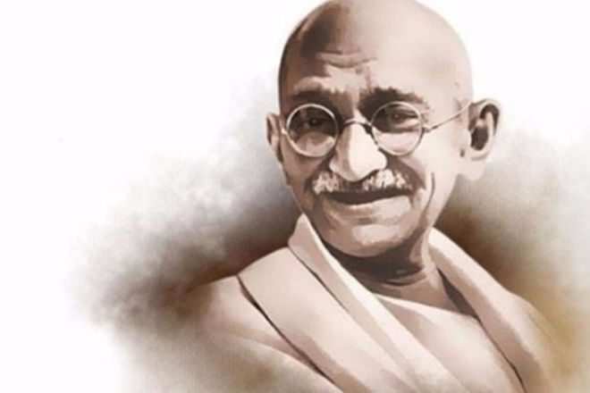

Freedom Fighters

Gandhiji
Born : 2 October 1869
Place of Birth : Porbandar, Porbandar State, Kathiawar Agency, Bombay Presidency, British India
Died : 30 January 1948 (aged 78)
Cause of death : Assassination (gunshot)
Nationality : Indian
Other names : Mahatma Gandhi, Bapu ji, Gandhi ji, M. K. Gandhi
Occupation : LawyerPoliticianActivistWriter
Years active : 1893–1948
Known for : Indian Independence Movement,Nonviolent resistance
Notable work : The Story of My Experiments with Truth
Movement : Indian independence movement
Office : President of the Indian National Congress
Term : 1924–1925
Political party : Indian National Congress

Sardar Vallabhbhai Patel
Born :31 October
Died :15 December 1950 (aged 75)
Cause of death :Heart attack
Political party :Indian National Congress
Mother :Laad Bai (1847-1932)
Father :Jhaverbhai Patel (1829-1923)
Profession :Barrister, Politician, Activist, Freedom Fighter
Awards :Bharat Ratna (1991) (posthumously)

Javaharlal Nehru
Born :14 November 1889
Died :27 May 1964 (aged 74)
Cause of death :Heart attack
Resting place :Shantivan
Political party :Indian National Congress
Occupation :Barrister, writer, politician
Awards :Bharat Ratna (1955)

Bhagat Singh
Born :28 September 1907
Died :23 March 1931 (aged 23)
Cause of death :Execution by hanging
Organization :Naujawan Bharat Sabha, Hindustan Socialist Republican Association, Kirti Kisan Party
Movement :Indian Independence movement